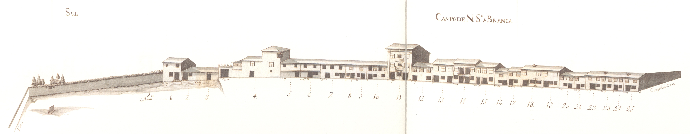

Campo e Calçada de Nossa Senhora a Branca
Número: 42

Vista atual da rua

Vista atual da rua

Campo e Calçada de Nossa Senhora a Branca- Norte.

Campo e Calçada de Nossa Senhora a Branca- Sul.
Grande espaço aberto, continuação natural de Santa Ana, onde, pelo menos
desde 1319, existia uma ermida, então com a invocação de Nossa Senhora da Carreira.
NoneD.Diogo de Sousa reedificou esta igreja durante o
séc. XVIII recebeu um retábulo para a capela mor (1745, alterado em 1782), sacrário (1756-57)
e fachada (1771).
Em 1750 este campo era ainda uma zona de arrabalde. As suas casas, quase todas de
dois pisos e dois vãos- embora haja uma ou outra de 3 pisos-, são na sua maioria, do
tipo de porta com janela no piso térreo (62%). Algumas eram de maiores dimensões ou
continham outra organização de fachada (casas n.º 11, 14, casa A Oeste da n.º26, 26 e 37,
esta com o terceiro piso todo recoberto de gelosias), bem como a existência de gelosias
na maioria das janelas (embora haja ainda bastantes aberturas que eram tapadas com portas de madeira),
não são bastantes para melhorar a qualidade da arquitectura deste campo.
Saliente-se ainda a casa do prazo n.º4, com o seu portão lateral terminado em cubos
sobrepostos por bolsas e «torre» com janelas de canto.
Este espaço só se desenvolveu cem anos mais tarde com o crescimento da cidade que
obrigou, em 1882, à abertura da actual rua de Santa Margarida.
Das 27 casas do lado Norte e 25 do Sul, eram prazos do Cabido
15 e 25, respectivamente.
Os alçados que vemos correspondem o do Norte à parte deste largo que vao desde a actual
rua do Sardoal até ao ponto Sudoeste da rua de Santa Margarida:
e o alçado Sul, hoje totalmente alterado, compreende o espaço entre as ruas de Restauração e 31 de Janeiro.
Número da casa: 1,2 e 3
Número da casa: 4
Enfiteuta: Ana Maria de Magalhães
Foro: 1500 reis, 4 alqueires de trigo, 20 de paõ meado e 10 galinhas
Número da casa: 5,6 e 7
Enfiteuta: Ana Maria de Magalhães
Número da casa: 8
Enfiteuta: Ana Maria de Magalhães
Número da casa: 9
Enfiteuta: Ana Maria de Magalhães
Número da casa: 10
Enfiteuta: Ana Maria de Magalhães
Número da casa: 11
Enfiteuta: Ana Maria de Magalhães
Número da casa: 12
Enfiteuta: Ana Maria de Magalhães
Número da casa: 13
Enfiteuta: Ana Maria de Magalhães
Número da casa: 14
Enfiteuta: Ana Maria de Magalhães
Número da casa: 15
Enfiteuta: Ana Maria de Magalhães
Número da casa: 16
Enfiteuta: Ana Maria de Magalhães
Número da casa: 17
Enfiteuta: Ana Maria de Magalhães
Número da casa: 18
Enfiteuta: Ana Maria de Magalhães
Número da casa: 19
Enfiteuta: Ana Maria de Magalhães
Número da casa: 20 e 21
Enfiteuta: Ana Maria de Magalhães
Número da casa: 22 e 23
Enfiteuta: Ana Maria de Magalhães
Número da casa: 24 e 25
Enfiteuta: Ana Maria de Magalhães
Número da casa: 26 e 27
Enfiteuta: Ana Maria de Magalhães
Número da casa: 28
Enfiteuta: Ana Maria de Magalhães
Número da casa: 29
Enfiteuta: Ana Maria de Magalhães
Número da casa: 30
Enfiteuta: Ana Maria de Magalhães
Número da casa: 31
Enfiteuta: Ana Maria de Magalhães
Número da casa: 32
Enfiteuta: Ana Maria de Magalhães
Número da casa: 33
Enfiteuta: Ana Maria de Magalhães
Número da casa: 34
Enfiteuta: Ana Maria de Magalhães
Número da casa: 35 a 40
Enfiteuta: Ana Maria de Magalhães